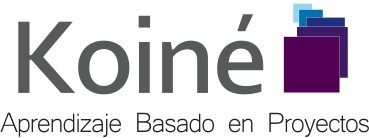

Work Experience
- El Mexicanito
-
Website of a fictional restaurant in which customers could enter
to make their orders online. Developed in PHP, CSS and MySQL database.
Project for Database Programming and Introduction to the Internet classes.
- Video games for elderly people
-
Game set for specific use in older adults who allow train short-term memory.
Developed for mobile devices using Construct 2 Game Engine by Scirra and
Phonegap. Software Engineering Project.
- Koiné
-
Set of applications that aim to facilitate the administration of projects in
both research and teaching. In charge for develop the section of the Final Report,
which covers all the information that makes up the project. Development frameworks
like Symfony 2 and Bootstrap were used, and PHPWord library to
export project information to Word format.
